Chocolate most commonly comes in dark, milk, and white varieties.
Chocolate most commonly comes in dark, milk, and white varieties.
Chocolate is a food product made from roasted and ground cacao pods, that is available as a liquid, solid or paste, on its own or as a flavoring agent in other foods. Cacao has been consumed in some form since at least the Olmec civilization (19th-11th century BCE),[1][2] and the majority of Mesoamerican people - including the Maya and Aztecs - made chocolate beverages.[3]
The seeds of the cacao tree have an intense bitter taste and must be fermented to develop the flavor. After fermentation, the beans are dried, cleaned, and roasted. The shell is removed to produce cocoa nibs, which are then ground to cocoa mass, unadulterated chocolate in rough form. Once the cocoa mass is liquefied by heating, it is called chocolate liquor. The liquor may also be cooled and processed into its two components: cocoa solids and cocoa butter. Baking chocolate, also called bitter chocolate, contains cocoa solids and cocoa butter in varying proportions, without any added sugar. Powdered baking cocoa, which contains more fiber than cocoa butter, can be processed with alkali to produce dutch cocoa.
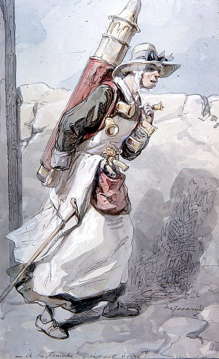 Much of the chocolate consumed today is in the form of sweet chocolate, a combination of cocoa solids, cocoa butter or added vegetable oils, and sugar. Milk chocolate is sweet chocolate that additionally contains milk powder or condensed milk. White chocolate contains cocoa butter, sugar, and milk, but no cocoa solids.
Chocolate is one of the most popular food types and flavors in the world, and many foodstuffs involving chocolate exist, particularly desserts, including cakes, pudding, mousse, chocolate brownies, and chocolate chip cookies. Many candies are filled with or coated with sweetened chocolate. Chocolate bars, either made of solid chocolate or other ingredients coated in chocolate, are eaten as snacks. Gifts of chocolate molded into different shapes (such as eggs, hearts, coins) are traditional on certain Western holidays, including Christmas, Easter, Valentine's Day, and Hanukkah. Chocolate is also used in cold and hot beverages, such as chocolate milk and hot chocolate, and in some alcoholic drinks, such as creme de cacao.
Although cocoa originated in the Americas, West African countries, particularly Côte d'Ivoire and Ghana, are the leading producers of cocoa in the 21st century, accounting for some 60% of the world cocoa supply. With some two million children involved in the farming of cocoa in West Africa, child slavery and trafficking were major concerns in 2018,[4][5] and continue to be. International attempts to improve conditions for children were doomed to failure because of persistent poverty, absence of schools, increasing world cocoa demand, more intensive farming of cocoa, and continued exploitation of child labor.[4]
Contents
1 History
1.1 Mesoamerican usage
1.2 European adaptation
1.3 Introduction to the United States
1.4 Etymology
2 Types
2.1 Milk
2.2 White
2.3 Dark
2.4 Unsweetened
3 Production
3.1 Genome
3.2 Cacao varieties
3.3 Processing
3.4 Blending
3.5 Conching
3.6 Tempering
3.7 Shaping
3.8 Storage
4 Composition
4.1 Nutrition
4.2 Effects on health
4.3 Phytochemicals
5 Labeling
6 Industry
6.1 Manufacturers
6.2 Child labor in cocoa harvesting
6.3 Fair trade
7 Usage and consumption
7.1 Bars
7.2 Coating and filling
7.3 Beverages
8 See also
9 References
10 Further reading
11 External links
History
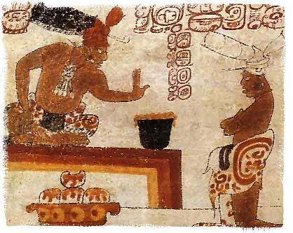 Chocolate has been prepared as a drink for nearly all of its history. For example, one vessel found at an Olmec archaeological site on the Gulf Coast of Veracruz, Mexico, dates chocolate's preparation by pre-Olmec peoples as early as 1750 BC.[6] On the Pacific coast of Chiapas, Mexico, a Mokaya archaeological site provides evidence of cocoa beverages dating even earlier, to 1900 BC.[7][6] The residues and the kind of vessel in which they were found indicate the initial use of cocoa was not simply as a beverage, but the white pulp around the cocoa beans was likely used as a source of fermentable sugars for an alcoholic drink.[8]
An early Classic-period (460–480 AD) Mayan tomb from the site in Rio Azul had vessels with the Maya glyph for cocoa on them with residue of a chocolate drink, suggests the Maya were drinking chocolate around 400 AD.[9] Documents in Maya hieroglyphs stated chocolate was used for ceremonial purposes, in addition to everyday life.[10] The Maya grew cacao trees in their backyards,[11] and used the cocoa seeds the trees produced to make a frothy, bitter drink.[12]
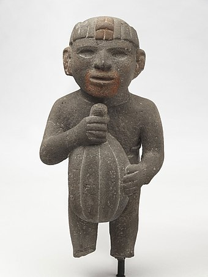 By the 15th century, the Aztecs gained control of a large part of Mesoamerica and adopted cocoa into their culture. They associated chocolate with Quetzalcoatl, who, according to one legend, was cast away by the other gods for sharing chocolate with humans,[13] and identified its extrication from the pod with the removal of the human heart in sacrifice.[14] In contrast to the Maya, who liked their chocolate warm, the Aztecs drank it cold, seasoning it with a broad variety of additives, including the petals of the Cymbopetalum penduliflorum tree, chile pepper, allspice, vanilla, and honey. The Aztecs were unable to grow cocoa themselves, as their home in the Mexican highlands was unsuitable for it, so chocolate was a luxury imported into the empire.[13] Those who lived in areas ruled by the Aztecs were required to offer cocoa seeds in payment of the tax they deemed "tribute".[13] Cocoa beans were often used as currency.[15] For example, the Aztecs used a system in which one turkey cost 100 cocoa beans and one fresh avocado was worth three beans.[16] The Maya and Aztecs associated cocoa with human sacrifice, and chocolate drinks specifically with sacrificial human blood.[17][18] The Spanish royal chronicler Gonzalo Fernández de Oviedo y Valdés described a chocolate drink he had seen in Nicaragua in 1528, mixed with achiote: "because those people are fond of drinking human blood, to make this beverage seem like blood, they add a little achiote, so that it then turns red. ... and part of that foam is left on the lips and around the mouth, and when it is red for having achiote, it seems a horrific thing, because it seems like blood itself."[18]
Etymology
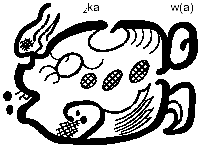 Cocoa, pronounced by the Olmecs as kakawa,[1] dates to 1000 BC or earlier.[1] The word "chocolate" entered the English language from Spanish in about 1600.[32] The word entered Spanish from the word chocolātl in Nahuatl, the language of the Aztecs. The origin of the Nahuatl word is uncertain, as it does not appear in any early Nahuatl source, where the word for chocolate drink is cacahuatl, "cocoa water". It is possible that the Spaniards coined the word (perhaps in order to avoid caca, a vulgar Spanish word for "faeces") by combining the Yucatec Mayan word chocol, "hot", with the Nahuatl word atl, "water".[33] A widely-cited proposal is that the derives from unattested xocolatl meaning "bitter drink" is unsupported; the change from x- to ch- is unexplained, as is the -l-. Another proposed etymology derives it from the word chicolatl, meaning "beaten drink", which may derive from the word for the frothing stick, chicoli.[34] Other scholars reject all these proposals, considering the origin of first element of the name to be unknown.[35] The term "chocolatier", for a chocolate confection maker, is attested from 1888.[36]
Types
Several types of chocolate can be distinguished. Pure, unsweetened chocolate, often called "baking chocolate", contains primarily cocoa solids and cocoa butter in varying proportions. Much of the chocolate consumed today is in the form of sweet chocolate, which combines chocolate with sugar.
Milk
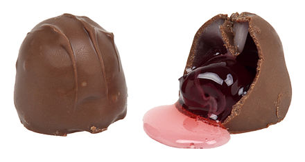 Milk chocolate is sweet chocolate that also contains milk powder or condensed milk. In the UK and Ireland, milk chocolate must contain a minimum of 20% total dry cocoa solids; in the rest of the European Union, the minimum is 25%.
White
White chocolate, although similar in texture to that of milk and dark chocolate, does not contain any cocoa solids that impart a dark color.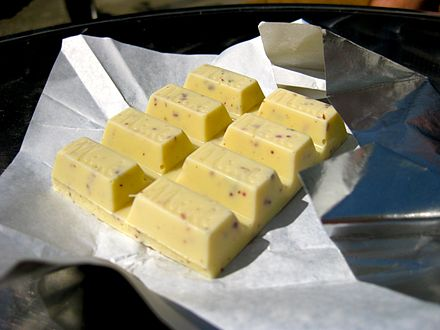 In 2002, the US Food and Drug Administration established a standard for white chocolate as the "common or usual name of products made from cocoa fat (i.e., cocoa butter), milk solids, nutritive carbohydrate sweeteners, and other safe and suitable ingredients, but containing no nonfat cocoa solids".
Dark
Dark chocolate is produced by adding fat and sugar to the cocoa mixture. The U.S. Food and Drug Administration calls this "sweet chocolate", and requires a 15% concentration of chocolate liquor. European rules specify a minimum of 35% cocoa solids.[37]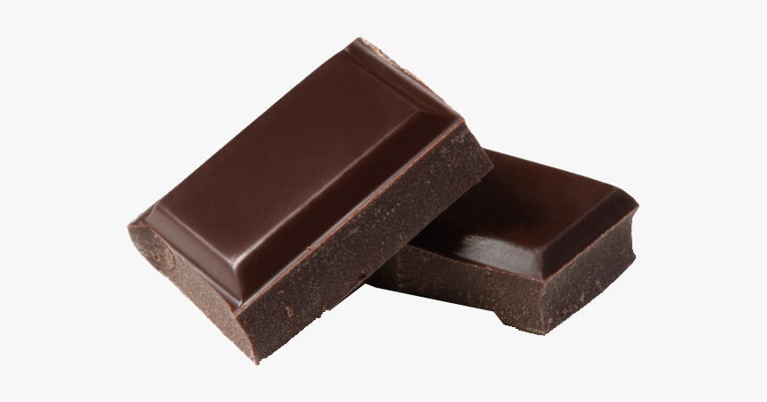 A higher amount of cocoa solids indicates more bitterness. Semisweet chocolate is dark chocolate with low sugar content. Bittersweet chocolate is chocolate liquor to which some sugar (typically a third), more cocoa butter and vanilla are added.[39] It has less sugar and more liquor than semisweet chocolate, but the two are interchangeable in baking. It is also known to last for two years if stored properly. As of 2017, there is no high-quality evidence that dark chocolate affects blood pressure significantly or provides other health benefits
Unsweetened
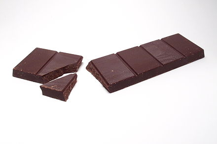 Unsweetened chocolate is pure chocolate liquor, also known as bitter or baking chocolate. It is unadulterated chocolate: the pure, ground, roasted chocolate beans impart a strong, deep chocolate flavor. It is typically used in baking or other products to which sugar and other ingredients are added. Raw chocolate, often referred to as raw cocoa, is always dark and a minimum of 75% cocoa. Poorly tempered or untempered chocolate may have whitish spots on the dark chocolate part, called chocolate bloom; it is an indication that sugar or fat has separated due to poor storage. It is not toxic and can be safely consumed
Production
Shaping
Chocolate is molded in different shapes for different uses:[74] - Chocolate bars (tablets) are rectangular blocks of chocolate meant to be broken down to cubes (or other predefined shapes), which can then be used for consumption, cooking and baking. The term is also used for combination bars, which are a type of candy bars - Chocolate chips are small pieces of chocolate, usually drop-like, which are meant for decoration and baking - Pistoles, callets and fèves are small, coin-like or bean-like pieces of chocolate meant for baking and patisserie applications (also see Pistole (coin) and Fève (trinket)) - Chocolate blocks are large, cuboid chunks of chocolate meant for professional use and further processing - Other, more specialized shapes for chocolate include sticks, curls and hollow semi-spheres
Storage
Chocolate is very sensitive to temperature and humidity. Ideal storage temperatures are between 15 and 17 °C (59 and 63 °F), with a relative humidity of less than 50%. If refrigerated or frozen without containment, chocolate can absorb enough moisture to cause a whitish discoloration, the result of fat or sugar crystals rising to the surface. Various types of "blooming" effects can occur if chocolate is stored or served improperly.[75]
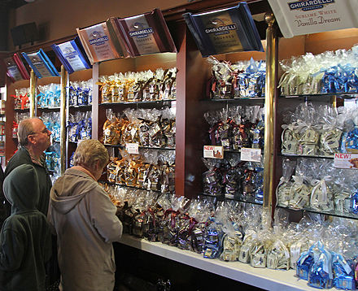 Chocolate bloom is caused by storage temperature fluctuating or exceeding 24 °C (75 °F), while sugar bloom is caused by temperature below 15 °C (59 °F) or excess humidity. To distinguish between different types of bloom, one can rub the surface of the chocolate lightly, and if the bloom disappears, it is fat bloom. Moving chocolate between temperature extremes, can result in an oily texture. Although visually unappealing, chocolate suffering from bloom is safe for consumption and taste unaffected.[76][77][78] Bloom can be reversed by retempering the chocolate or using it for any use that requires melting the chocolate.[79] Chocolate is generally stored away from other foods, as it can absorb different aromas. Ideally, chocolates are packed or wrapped, and placed in proper storage with the correct humidity and temperature. Additionally, chocolate is frequently stored in a dark place or protected from light by wrapping paper. The glossy shine, snap, aroma, texture, and taste of the chocolate can show the quality and if it was stored well.[80]
Labeling
Some manufacturers provide the percentage of chocolate in a finished chocolate confection as a label quoting percentage of "cocoa" or "cacao". This refers to the combined percentage of both cocoa solids and cocoa butter in the bar, not just the percentage of cocoa solids.[101] The Belgian AMBAO certification mark indicates that no non-cocoa vegetable fats have been used in making the chocolate.[102][103] A long-standing dispute between Britain on the one hand and Belgium and France over British use of vegetable fats in chocolate ended in 2000 with the adoption of new standards which permitted the use of up to five percent vegetable fats in clearly labelled products.[104] This British style of chocolate has sometimes been pejoratively referred to as "vegelate".[104] Chocolates that are organic[105] or fair trade certified[106] carry labels accordingly. In the United States, some large chocolate manufacturers lobbied the federal government to permit confections containing cheaper hydrogenated vegetable oil in place of cocoa butter to be sold as "chocolate". In June 2007, in response to consumer concern about the proposal, the FDA reiterated "Cacao fat, as one of the signature characteristics of the product, will remain a principal component of standardized chocolate."[107]
Industry
Chocolate, prevalent throughout the world, is a steadily growing, US$50 billion-a-year worldwide business.[108] Europe accounts for 45% of the world's chocolate revenue,[109] and the US spent $20 billion in 2013.[110] Big Chocolate is the grouping of major international chocolate companies in Europe and the U.S. U.S. companies Mars and Hershey's alone generated $13 billion a year in chocolate sales and account for two-thirds of U.S. production in 2004.[111] Despite the expanding reach of the chocolate industry internationally, cocoa farmers and labourers in the Ivory Coast are unaware of the uses of the beans; the high cost of chocolate products in the Ivory Coast make it inaccessible to the majority of the population, who do not know what it tastes like.[112]
Usage and Consumption
Bars
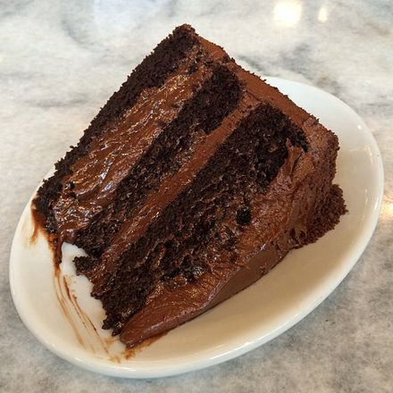Chocolate is sold in chocolate bars, which come in dark chocolate, milk chocolate and white chocolate varieties. Some bars that are mostly chocolate have other ingredients blended into the chocolate, such as nuts, raisins, or crisped rice. Chocolate is used as an ingredient in a huge variety of bars, which typically contain various confectionary ingredients (e.g., nougat, wafers, caramel, nuts, etc.) which are coated in chocolate.
Coating and Filling
Chocolate is used as a flavouring product in many desserts, such as chocolate cakes, chocolate brownies, chocolate mousse and chocolate chip cookies. Numerous types of candy and snacks contain chocolate, either as a filling (e.g., M&M's) or as a coating (e.g., chocolate-coated raisins or chocolate-coated peanuts).
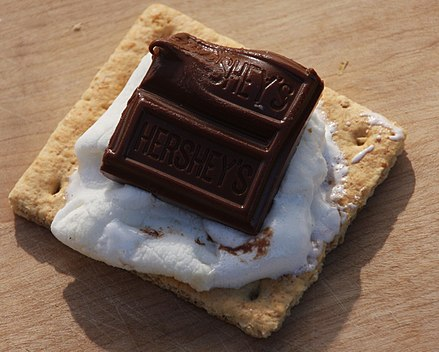
Beverages
Some non-alcoholic beverages contain chocolate, such as chocolate milk, hot chocolate, chocolate milkshakes and tejate. Some alcoholic liqueurs are flavoured with chocolate, such as chocolate liqueur and creme de cacao. Chocolate is a popular flavour of ice cream and pudding, and chocolate sauce is a commonly added as a topping on ice cream sundaes. The caffè mocha is an espresso beverage containing chocolate.
See also
Main article: Outline of chocolate Candida krusei Candy making Children in cocoa production Chocolataire Chocolate almonds Chocolate chip Chocoholic Cuestión moral: si el chocolate quebranta el ayuno eclesiástico List of chocolate-covered foods List of chocolate beverages List of chocolate companies Theobroma cacao, the cocoa/chocolate plant United States military chocolate